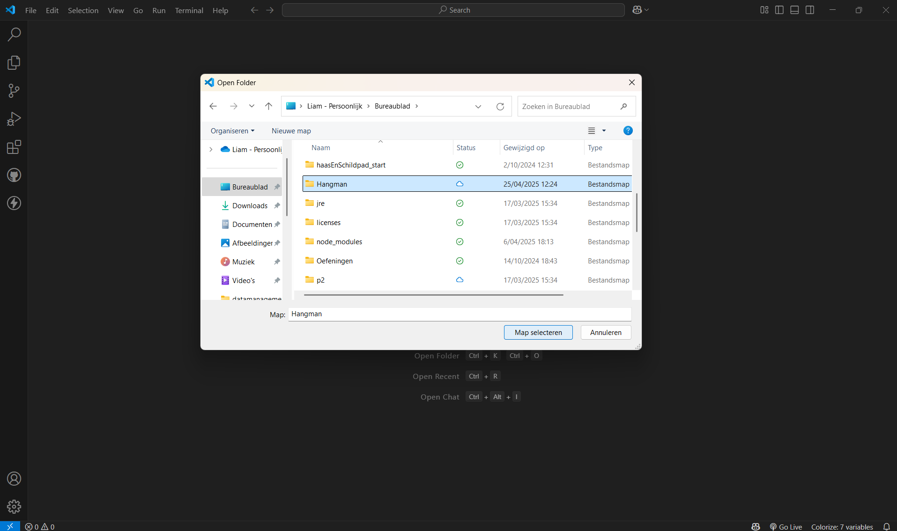

Stap 1 - mappen en bestanden
- 1.1 Maak een nieuwe map aan en geef als naam hangman

- 1.2 Open het programma Visual Studio Code en open de folder die je zonet hebt gemaakt

- 1.3 Maak de volgende folderstructuur

- 1.4 druk met een rechter muisklik op de index.html en druk op open with liveserver, zo wordt je standaard browser gestart en zal je een blanco pagina zien verschijnen!